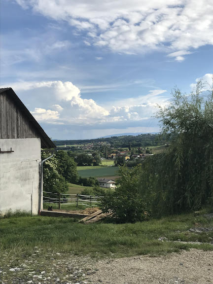
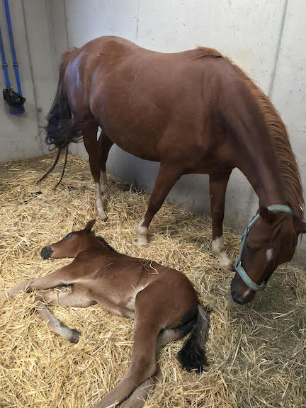
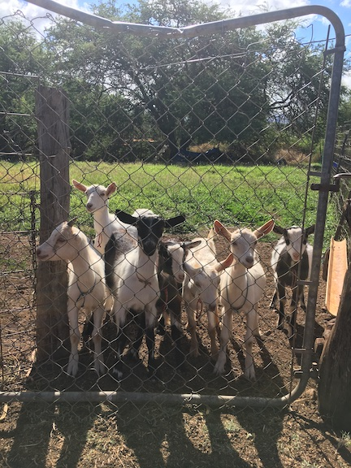

`
Some of my best moments and experiences have come from exploring in nature and
getting out of my comfort zone. My Fiance is in Veterinary School at UC Davis, and before enrolling, asked if I wanted to
work as a Ranch Hand with her in a town of 200 people in rural Austria. We ended up staying the
entire summer and had an incredible time.
While working on the ranch, I was hustling through environments I had little to no experience with.
Though the labor was initially strenuous, it proved to be rewarding as time went on. Both my fiance and I
would trade shifts mucking stalls, building fences for corrals, and providing assistance to the barn leads.
We also have ventured to Maui, Hawaii with some friends and wanted to do something unconventional and slow-paced.
With this in mind,we decided to visit Surfing Goat Dairy, a Goat Dairy Farm on the edges of Maui’s Haleakala
Crater in lower Kula.


